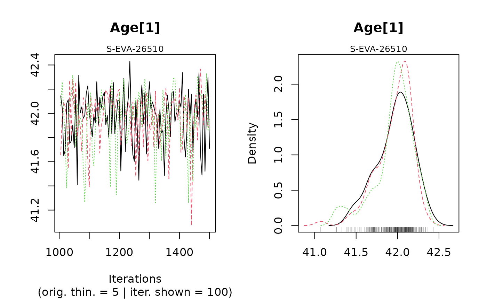
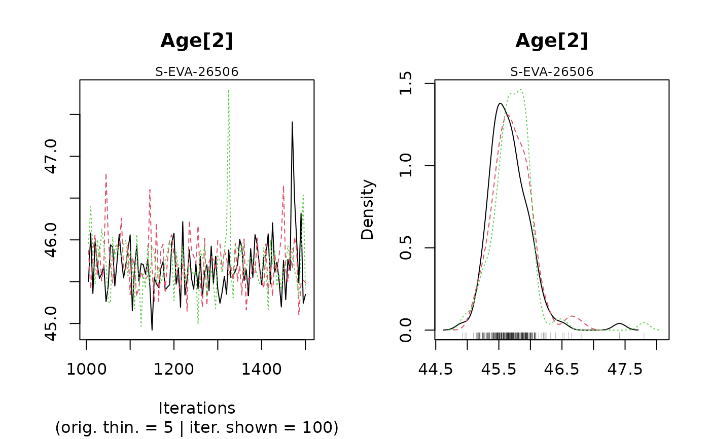
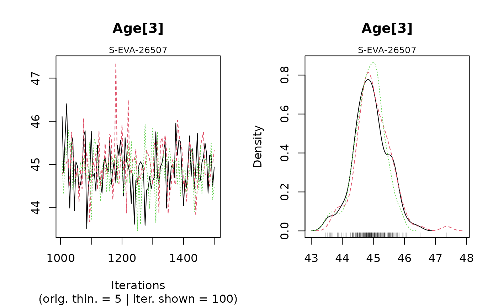
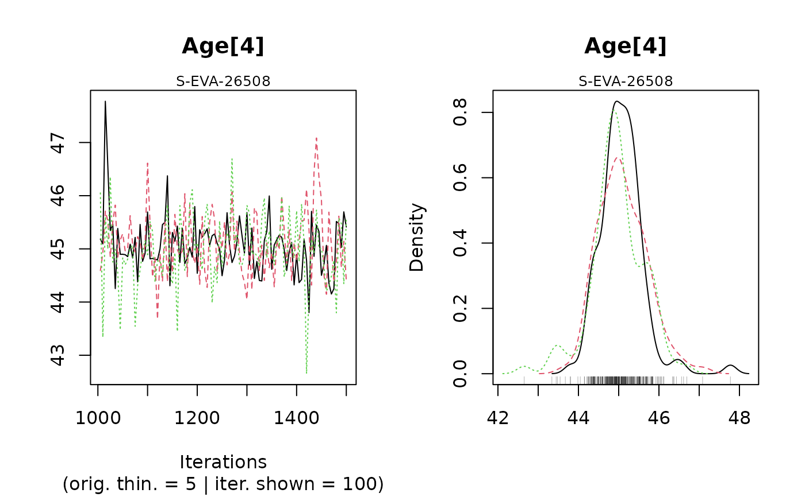
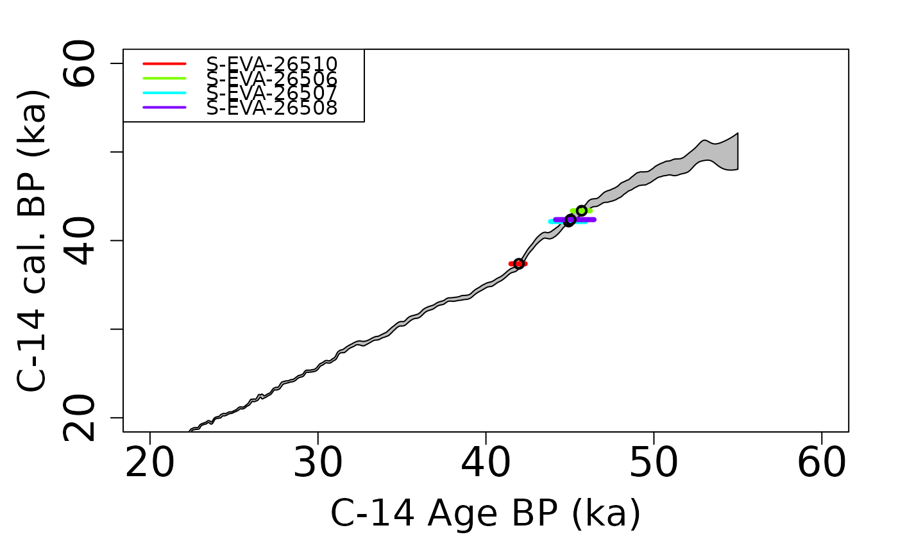
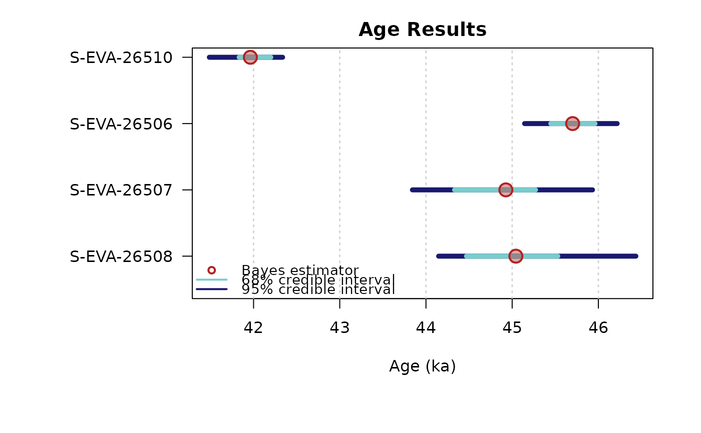

Bayesian analysis for C-14 age estimations of various samples
Source:R/AgeC14_Computation.R
AgeC14_Computation.RdThis function calibrates the C-14 age of samples to get an age (in ka). The user can choose one of the following radiocarbon calibration curve: Northern or Southern Hemisphere or marine atmospheric. It must be the same curve for all samples.
Usage
AgeC14_Computation(
Data_C14Cal,
Data_SigmaC14Cal,
SampleNames,
Nb_sample,
PriorAge = rep(c(10, 50), Nb_sample),
SavePdf = FALSE,
OutputFileName = c("MCMCplot", "HPD_CalC-14Curve", "summary"),
OutputFilePath = c(""),
SaveEstimates = FALSE,
OutputTableName = c("DATA"),
OutputTablePath = c(""),
StratiConstraints = c(),
sepSC = c(","),
Model = c("full"),
CalibrationCurve = c("IntCal20"),
Iter = 50000,
t = 5,
n.chains = 3,
quiet = FALSE,
roundingOfValue = 3
)Arguments
- Data_C14Cal
numeric (required): corresponding to C-14 age estimate.
- Data_SigmaC14Cal
numeric (required): corresponding to the error of C-14 age estimates.
- SampleNames
character (required): names of sample. The length of this vector is equal to
Nb_sample.- Nb_sample
integer: number of samples.
- PriorAge
numeric (with default): lower and upper bounds for age parameter of each sample in years (not in ka). Note that,
length(PriorAge) == 2 * Nb_sampleandPriorAge[2i-1,2i]corresponds to the lower and upper bounds of sample whose number ID is equal toi.- SavePdf
logical (with default): if TRUE save graphs in pdf file named
OutputFileNamein folderOutputFilePath.- OutputFileName
character (with default): name of the pdf file that will be generated by the function if
SavePd=TRUE,length(OutputFileName) = =3, see PLOT OUTPUT in Value section for more informations.- OutputFilePath
character (with default): path to the pdf file that will be generated by the function if
SavePdf=TRUE. If it is not equal to "", it must be terminated by "/".- SaveEstimates
logical (with default): if TRUE save Bayes' estimates, credible interval at level 68% and 95% and the result of the Gelman and Rubin test of convergence, in a csv table named
OutputFileNamein folderOutputFilePath.- OutputTableName
logical (with default): name of the table that will be generated by the function if
SaveEstimates=TRUE.- OutputTablePath
character (with default): path to the table that will be generated by the function if
SaveEstimates=TRUE. If it is not equal to "", it must be terminated by "/".- StratiConstraints
numeric matrix or character(with default): input object for the stratigraphic relation between samples. If there is stratigraphic relation between samples see the details section for instructions regarding how to correctly fill
StratiConstraints; the user can refer to a matrix (numeric matrix) or to a csv file (character). If there is no stratigraphic relation default value is suitable.- sepSC
character (with default): if
StratiConstraintsis character, indicate column separator inStratiConstraintscsv file.- Model
character (with default): if "full", error on estimate calibration curve is taken account. If "naive" this error is not taken account in the age estimate.
- CalibrationCurve
character (with default): calibration curve chosen. Allowed inputs are
"Intcal13" or "Intcal13" for Northern Hemisphere atmospheric radiocarbon calibration curve,
"Marine13" or "Marine13" for Marine radiocarbon calibration curve,
"SHCal13" or "SHCal20" for Southern Hemisphere atmospheric radiocarbon calibration curve
a csv file, with tree columns, the first column is dedicated to
"Cal.BP", the second to"XC-14.age", the third to"Error". The decimal of this file must be a dot, and the separator must be a comma.
- Iter
integer (with default): number of iterations for the MCMC computation (for more information see rjags::jags.model).
- t
integer (with default): 1 every
titerations of the MCMC is considered for sampling the posterior distribution (for more information see rjags::jags.model.- n.chains
integer (with default): number of independent chains for the model (for more information see rjags::jags.model.
- quiet
logical (with default): enables/disables rjags::rjags-package messages
- roundingOfValue
integer (with default): Integer indicating the number of decimal places to be used, default set to 3.
Value
NUMERICAL OUTPUT
A list containing the following objects:
Sampling: that corresponds to a sample of the posterior distributions of the age parameters;
Outlier: stating the names of samples that are considered as outliers;
Model: stating which model was chosen (
"full"or"naive");CalibrationCurve: stating which radiocarbon calibration curve was chosen;
PriorAge: stating the priors used for the age parameter;
StratiConstraints: stating the stratigraphic relations between samples considered in the model.
The Gelman and Rubin test of convergency: print the result of the Gelman and Rubin test of convergence for the age estimate for each sample. A result close to one is expected.
In addition, the user must visually assess the convergence of the trajectories by looking at the graph generated by the function (see PLOT OUTPUT for more informations).
If both convergences (Gelman and Rubin test and plot checking) are satisfactory, the user can consider the estimates as valid. Otherwise, the user may try increasing the number of MCMC iterations (Iter) or being more precise if it is possible on thePriorAgeparameter to reach convergence.Credible intervals and Bayes estimates: prints the Bayes' estimates, the credible intervals at 95% and 68% for the age parameters for each sample.
PLOT OUTPUT
MCMC trajectories: A graph with the MCMC trajectories and posterior distributions of the age parameter is displayed.
On each line, the plot on the left represents the MCMC trajectories, and the one on the right the posterior distribution of the parameter.Summary of sample age estimates: plot credible intervals and Bayes' estimate of each sample age on one graph.
To give the results in a publication, we recommend to give the Bayes' estimate of the parameters as well as the credible interval at 95% or 68%.
Details
How to fill StratiConstraints?
If there is stratigraphic relations between samples, C-14 age in Data_C14Cal must be ordered by order of increasing ages.
The user can fill the StratiConstraints matrix as follow.
Size of the matrix: row number of
StratiConstraintsmatrix is equal toNb_sample+1, and column number is equal toNb_sample.First line of the matrix: for all
i in {1,...,Nb_Sample},StratiConstraints[1,i]=1that means the lower bound of the sample age (given inPriorAge[2i-1]) for the sample whose number ID is equal toi, is taken into account.Sample relations: for all
j in {2,...,Nb_Sample+1}and alli in {j,...,Nb_Sample},StratiConstraints[j,i]=1if sample age whose number ID is equal toj-1is lower than sample age whose number ID is equal toi. Otherwise,StratiConstraints[j,i]=0.
Note that StratiConstraints_{2:Nb_sample+1,1:Nb_sample} is a upper triangular matrix.
The user can also use SCMatrix or SC_Ordered (if all samples are ordered) functions
to construct the StratiConstraints matrix.
The user can also refer to a .csv file that contains the relation between samples as defined above.
The user must take care about the separator used in the csv file using the argument sepSC.
** More precision on Model **
We propose two models "full" or "naive". If Model = 'full' that means
measurement error and error on calibration curve are taken account in
the Bayesian model; if Model = "naive" that means only error on measurement
are taken account in the mode.
More precisely, the model considered here, as the one developed by Christen, JA (1994), assume multiplicative effect of errors to address the problem of outliers. In addition, to not penalise variables that are not outliers and damage theirs estimation, we introduce a structure of mixture, that means only variable that are considered as outlier have in addition a multiplicative error.
Note
Please note that the initial values for all MCMC are currently all the same for all chains since we rely on the automatic initial value generation of JAGS. This is not optimal and will be changed in future. However, it does not affect the quality of the age estimates if the chains have converged.
How to cite
Christophe, C., Philippe, A., Guérin, G., Kreutzer, S., 2024. AgeC14_Computation(): Bayesian analysis for C-14 age estimations of various samples. In: Christophe, C., Philippe, A., Kreutzer, S., Guérin, G., Baumgarten, F.H., Frerebeau, N., 2024. BayLum: Chronological Bayesian Models Integrating Optically Stimulated. R package version 0.3.3.9000-13. https://CRAN.r-project.org/package=BayLum
References
Christen, JA (1994). Summarizing a set of radiocarbon determinations: a robust approach. Applied Statistics, 489-503.
Reimer PJ, Bard E, Bayliss A, Beck JW, Blackwell PC, Bronl Ramsey C, Buck CE, Cheng H, Edwards RL, Friedrich M, Grootes PM, Guilderson TP, Haflidason H, Hajdas I, Hatte C, Heaton TJ, Hoffmann DL, Hogg AG, Hughen KA, Kaiser KF, Kromer B, Manning SW, Niu M, Reimer RW, Richards DA, Scott EM, Southon JR, Staff RA, Turney CSM, van der Plicht J. 2013. IntCal13 ans Marine13 radiocarbon age calibration curves 0-50000 years cal BP. Radiocarbon 55(4)=1869-1887.
Hogg AG, Hua Q, Blackwell PG, Niu M, Buck CE, Guilderson TP, Heaton TJ, Palmer JG, Reimer PJ, Reimer RW, Turney CSM, Zimmerman SRH. 2013. SHCal13 Southern Hemisphere calibration, 0-50000 years cal. BP Radiocarbon 55(4):1889-1903
Examples
## Load data
data(DATA_C14,envir = environment())
C14Cal <- DATA_C14$C14[,1]
SigmaC14Cal <- DATA_C14$C14[,2]
Names <- DATA_C14$Names
nb_sample <- length(Names)
## Age computation of samples without stratigraphic relations
Age <- AgeC14_Computation(
Data_C14Cal = C14Cal,
Data_SigmaC14Cal = SigmaC14Cal,
SampleNames = Names,
Nb_sample = nb_sample,
PriorAge = rep(c(20,60),nb_sample),
Iter = 500,
quiet = TRUE,
roundingOfValue = 3)
#> Warning: [plot_MCMC()] 'n.iter' out of range, reset to number of observations




#>
#>
#> >> MCMC Convergence of Age parameters <<
#> ----------------------------------------------
#> Sample name Bayes estimate Uppers credible interval
#> A_S-EVA-26510 1.192 1.301
#> A_S-EVA-26506 1.007 1.014
#> A_S-EVA-26507 1.075 1.148
#> A_S-EVA-26508 1.002 1.013
#>
#>
#> ---------------------------------------------------------------------------------------------------
#> *** WARNING: The following information are only valid if the MCMC chains have converged ***
#> ---------------------------------------------------------------------------------------------------
#>
#>
#>
#> >> Bayes estimates of Age for each sample and credible interval <<
#> ------------------------------------------------------
#> Sample name Bayes estimate Credible interval:
#> A_S-EVA-26510 41.8844424209351
#> lower bound upper bound
#> at level 95% 41.43 42.388
#> at level 68% 41.805 42.24
#> ------------------------------------------------------
#> Sample name Bayes estimate Credible interval:
#> A_S-EVA-26506 45.7259208992242
#> lower bound upper bound
#> at level 95% 45.173 46.511
#> at level 68% 45.476 45.973
#> ------------------------------------------------------
#> Sample name Bayes estimate Credible interval:
#> A_S-EVA-26507 44.9408930781989
#> lower bound upper bound
#> at level 95% 43.934 45.951
#> at level 68% 44.484 45.325
#> ------------------------------------------------------
#> Sample name Bayes estimate Credible interval:
#> A_S-EVA-26508 45.0339693179971
#> lower bound upper bound
#> at level 95% 43.875 46.101
#> at level 68% 44.578 45.508
#>
#> ------------------------------------------------------

